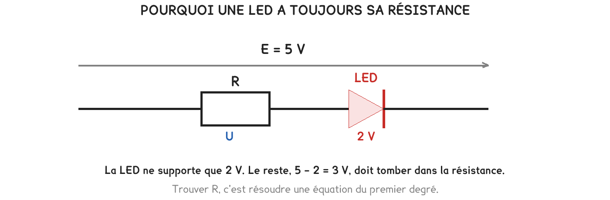

2de Bac Pro CIEL
Une LED à protéger, un budget de câble, un fusible à ne pas faire sauter. Trois problèmes d'atelier, une seule méthode — et un piège à la fin, quand le calcul donne 16,75 postes.
4 exercices · 24 items d'entraînement · 8 replis · 1 simulation · 3 figures
Savoirs travaillés
Trois demandes arrivent à l’atelier le même matin.
| La demande | |
|---|---|
| La LED | une LED de 2 V sous 5 V, 20 mA au plus : quelle résistance ? |
| Le câble | un budget de 200 €, 45 € de connectique, le câble à 1,20 € le mètre : combien de mètres ? |
| Le fusible | un fusible de 10 A, un switch à 0,8 A, un onduleur à 2,5 A, des postes à 0,4 A : combien de postes ? |
Les trois cachent la même chose : un nombre inconnu. On l’appelle x, on écrit ce qu’on sait sur lui, et on le fait sortir. Les deux premiers donnent une équation ; le troisième, une inéquation, parce qu’il y a un « au plus ».
On fait la même chose des deux côtés du signe égal.
Méthode : regrouper les x d’un côté, les nombres de l’autre, puis diviser.
« Je passe le 4 de l’autre côté, il change de signe » : la phrase fonctionne, mais elle cache ce qu’on fait vraiment, et elle fait perdre pied dès qu’il y a une division. On retire 4 des deux côtés : c’est la même chose, et on sait pourquoi.
On écrit une ligne par geste, et le geste dans la marge. Les deux côtés restent égaux à chaque ligne : c’est ce qui permet de retrouver une erreur.
| Ce qu’on écrit | Le geste, des deux côtés |
|---|---|
| 6x + 7 = 31 | l’équation de départ |
| 6x + 7 − 7 = 31 − 7 | on retire 7 |
| 6x = 24 | on calcule chaque côté |
| 6x ÷ 6 = 24 ÷ 6 | on divise par 6 |
| x = 4 | la solution |
| 6 × 4 + 7 = 24 + 7 = 31 | on vérifie : on retrouve 31 |
On défait dans l’ordre inverse. Dans 6x + 7, on a pris x, on l’a multiplié par 6, puis on a ajouté 7. Pour revenir à x, on commence par la fin : on retire 7, puis on divise par 6. Comme pour se déshabiller : la veste avant le pull.
| L’équation ressemble à | Le premier geste | Un exemple |
|---|---|---|
| x + a = b | retirer a | x + 12 = 30, donc x = 18 |
| x − a = b | ajouter a | x − 9 = 6, donc x = 15 |
| a × x = b | diviser par a | 8x = 56, donc x = 7 |
| x ÷ a = b | multiplier par a | x ÷ 4 = 6, donc x = 24 |
| a × x + b = c | retirer b, puis diviser par a | 6x + 7 = 31, ci-dessus |
| a − b × x = c | ajouter b × x des deux côtés | dépliez « Quand x est retiré » |
| des x des deux côtés | retirer le plus petit nombre de x | dépliez « Des x des deux côtés » |
| une parenthèse | développer d’abord | dépliez « Une parenthèse » |
Pour aller plus loin
Le x est retiré de 50. Deux façons d’y arriver, qui donnent la même solution.
La façon sûre : faire passer les x du côté où ils sont positifs.
| Ce qu’on écrit | Le geste |
|---|---|
| 50 − 4x = 18 | |
| 50 = 18 + 4x | on ajoute 4x des deux côtés |
| 32 = 4x | on retire 18 des deux côtés |
| 8 = x | on divise par 4 |
L’autre façon : retirer 50 tout de suite. On obtient −4x = −32, puis on divise par −4 : x = 8. Un nombre négatif divisé par un nombre négatif donne un nombre positif. C’est là qu’on se trompe le plus souvent : d’où la première façon.
On vérifie : 50 − 4 × 8 = 50 − 32 = 18. C’est juste.
On veut les x d’un seul côté. On retire le plus petit nombre de x, ici 5x : il reste des x positifs à gauche, et plus aucun à droite.
| Ce qu’on écrit | Le geste |
|---|---|
| 9x − 4 = 5x + 20 | |
| 4x − 4 = 20 | on retire 5x des deux côtés |
| 4x = 24 | on ajoute 4 des deux côtés |
| x = 6 | on divise par 4 |
On vérifie chaque côté à part : à gauche 9 × 6 − 4 = 50, à droite 5 × 6 + 20 = 50. Les deux côtés sont égaux : c’est juste.
On développe d’abord : le 3 multiplie tout ce qui est dans la parenthèse, donc 3(x + 4) = 3x + 12, et non 3x + 4.
| Ce qu’on écrit | Le geste |
|---|---|
| 3(x + 4) = 2x + 19 | |
| 3x + 12 = 2x + 19 | on développe |
| x + 12 = 19 | on retire 2x des deux côtés |
| x = 7 | on retire 12 des deux côtés |
On vérifie dans l’équation de départ : 3 × (7 + 4) = 33 et 2 × 7 + 19 = 33.
Un moins devant une parenthèse change tous les signes de l’intérieur : −(x − 2) = −x + 2.
Rien ne change : on retire 3, il reste 0,25x = 8, puis on divise par 0,25. x = 8 ÷ 0,25 = 32.
Diviser par un nombre plus petit que 1 agrandit le résultat : c’est normal. Diviser par 0,25, c’est multiplier par 4 ; diviser par 0,5, c’est multiplier par 2.
On vérifie : 0,25 × 32 + 3 = 8 + 3 = 11.
Série · PREM
Série · PREM
Série · PREM
Avant de résoudre, il faut écrire. Les mots de l’énoncé disent presque tout : ce qui se répète multiplie l’inconnue, ce qui ne compte qu’une fois s’ajoute.
| Dans l’énoncé | Dans l’équation |
|---|---|
| « chaque », « par », « le mètre », « l’heure » | un nombre qui multiplie l’inconnue : 1,20 x |
| « un forfait », « des frais fixes », « déjà » | un nombre ajouté une seule fois : + 45 |
| « il reste », « on enlève », « on perd » | une soustraction |
| « le double », « le triple » | 2x, 3x |
| « au total », « fait », « vaut » | le signe = |
| « au plus », « ne pas dépasser », « maximum » | le signe ≤ |
| « au moins », « suffire », « minimum » | le signe ≥ |
Pour aller plus loin
Un service de stockage facture 9 € par mois, plus 0,50 € par giga au-delà du forfait. La facture du mois fait 21,50 €. Combien de gigas en plus ?
| L’étape | Ce qu’on écrit |
|---|---|
| Nommer | x, le nombre de gigas au-delà du forfait |
| Trier | 9 € une fois par mois ; 0,50 € pour chaque giga, donc 0,50 x |
| Écrire | 9 + 0,50 x = 21,50 |
| Estimer | il reste un peu plus de 12 € à 0,50 € le giga : environ 25 gigas |
| Résoudre | 0,50 x = 12,50, donc x = 12,50 ÷ 0,50 = 25 |
| Vérifier | 9 + 0,50 × 25 = 9 + 12,50 = 21,50 |
| Répondre | Le mois a coûté 25 gigas au-delà du forfait. |
L’estimation sert de garde-fou : si le calcul avait donné 2,5 ou 250, on aurait su tout de suite qu’une ligne était fausse.
C’est le calcul de la séquence 3, écrit autrement. La LED garde 2 V, la résistance prend 0,020 × R : les deux ensemble font les 5 V de l’alimentation.

Exercice · PREM
Une LED bleue garde 3,4 V à ses bornes. Sous 5 V, avec 20 mA au plus, quelle résistance faut-il ?
Une formule est une équation où les nombres sont remplacés par des lettres. On isole celle qu’on cherche avec les mêmes gestes.
P = U × I, isoler I : on divise les deux côtés par U.
I = P ÷ U — pour une lampe de 60 W sous 12 V, I = 60 ÷ 12 = 5 A.
On regarde ce qui arrive à la lettre cherchée, et on le défait, dans l’ordre inverse, comme pour un nombre.
| La lettre cherchée est… | On… | Un exemple |
|---|---|---|
| multipliée | divise les deux côtés | d = v × t, isoler t : t = d ÷ v |
| divisée | multiplie les deux côtés | v = d ÷ t, isoler d : d = v × t |
| ajoutée | retire des deux côtés | Pt = P₁ + P₂, isoler P₂ : P₂ = Pt − P₁ |
| multipliée, puis ajoutée | retire d’abord, puis divise | C = 15 + 2g, isoler g : g = (C − 15) ÷ 2 |
Pour aller plus loin
Une formule transformée se vérifie comme une équation : avec des nombres simples, choisis par soi.
Avec une formule fausse, g = 31 ÷ 2 − 15, on trouverait 0,5 au lieu de 8 : l’erreur saute aux yeux. Elle vient de l’ordre des gestes : on a divisé avant d’avoir retiré le 15.
Les parenthèses de (C − 15) ÷ 2 ne sont pas décoratives. Sans elles, la calculatrice fait la division d’abord et calcule C − 7,5.
Série · PREM
Une inéquation se résout comme une équation, avec ≤ ou ≥ à la place du =.
La réponse n’est plus un nombre, mais tous les nombres d’un côté d’une borne. En 2de, on divise seulement par des nombres positifs : le sens ne change pas.
Pour le câble : 45 + 1,20 x ≤ 200, donc 1,20 x ≤ 155, donc x ≤ 129,17. On peut acheter au plus 129 mètres — 130 dépasseraient le budget.
| La contrainte | L’arrondi | Un exemple |
|---|---|---|
| ne pas dépasser (≤) : budget, calibre, place | en dessous | une baie de 42 U, 6 U déjà pris, des serveurs de 5 U : 6 + 5n ≤ 42, n ≤ 7,2, donc 7 serveurs |
| en avoir assez (≥) : ports, stockage, autonomie | au-dessus | 130 postes à brancher, des switchs de 24 ports : 24n ≥ 130, n ≥ 5,42, donc 6 switchs |
Pour aller plus loin
La vérification d’une inéquation teste l’entier gardé et son voisin.
Les serveurs : avec 7, on occupe 6 + 5 × 7 = 41 U, qui tiennent dans 42 U. Avec 8, on arriverait à 46 U : la baie déborde. On garde 7.
Les switchs : avec 5, on n’a que 5 × 24 = 120 ports, il manque 10 postes. Avec 6, on a 144 ports, assez pour 130. On garde 6, même si 5,42 est plus proche de 5.
Si l’entier gardé ne respecte pas la contrainte, c’est l’arrondi qui est dans le mauvais sens. Si le suivant la respecte aussi, c’est la borne qui est fausse.
On n’arrondit pas au plus proche. 16,75 postes ne donnent pas 17 postes : le dix-septième ferait passer 10,1 A dans un fusible de 10 A. La contrainte décide du sens de l’arrondi, pas la règle du 5.
Série · PREM
Série · PREM
| Ce qu’on écrit | Ce qui ne va pas | Ce qu’il faut écrire |
|---|---|---|
| 4x = 20, donc x = 20 − 4 | x est multiplié par 4 : on défait par une division | x = 20 ÷ 4 = 5 |
| x − 6 = 10, donc x = 4 | le 6 est retiré : on le rajoute | x = 10 + 6 = 16 |
| 2x + 5 = 17, donc 2x = 22 | le 5 est ajouté : on le retire | 2x = 17 − 5 = 12 |
| 3(x + 2) = 3x + 2 | le 3 multiplie tout ce qui est dans la parenthèse | 3x + 6 |
| 7 = x + 3 : « x est du mauvais côté » | le côté ne change rien, on fait les mêmes gestes | 7 − 3 = x, donc x = 4 |
| x ≤ 12,6, donc 13 | un maximum s’arrondit en dessous | 12 |
Quand le résultat paraît bizarre, on le remplace dans l’équation de départ. C’est plus rapide que de tout refaire, et cela dit si l’erreur existe vraiment.
Exercice · PREM
Par prudence, on ne charge le fusible de 10 A qu’à 80 %. Switch 0,8 A, onduleur 2,5 A, postes à 0,4 A : combien de postes peut-on brancher ?
Exercice · PREM
Le calcul donne n ≤ 16,75. Un camarade répond « 17 postes, on arrondit ». Expliquez-lui en deux phrases pourquoi c’est faux.
Ce qu’il faut retenir de la séquence, à manipuler : quelques étapes, un geste à chacune, et un défi pour finir.
Pour aller plus loin
Le sens de l’inégalité se retourne. 2 < 5, mais − 2 > − 5 : multiplier par − 1 inverse l’ordre.
Donc − 2x ≤ 6 donne x ≥ − 3, et non x ≤ − 3. Vérifiez avec x = 0 : − 2 × 0 = 0, qui est bien inférieur à 6 — et 0 est bien supérieur à − 3.
En atelier, on évite le cas en rangeant les x du côté où ils sont positifs. 10 − 2x ≥ 4 s’écrit aussi 6 ≥ 2x, et l’on divise par 2 sans rien retourner.
Un seul problème, qui reprend toute la séquence. On le fait d’un bout à l’autre, comme un vrai : il n’y a pas d’indication de méthode en cours de route. À la fin, on produit son fichier de réponses.
Une salle de TP est alimentée par un circuit protégé à 16 A, sous 230 V. Le vidéoprojecteur et la box y tirent déjà 1,5 A à eux deux. Chaque poste élève consomme 150 W.
Pour câbler les postes, le fournisseur propose un forfait de 35 € puis le câble à 2,40 € le mètre. Le budget est de 260 €.
La question : « Combien de postes peut-on installer, et combien de mètres de câble peut-on commander ? »
Lire la situation
a) Relever les données, avec leurs unités.
b) Dire quelle grandeur manque pour pouvoir compter les postes.
Choisir la méthode
c) Donner la formule qui relie la puissance, la tension et l’intensité, puis l’écrire pour isoler l’intensité.
d) Écrire l’inéquation qui porte sur le nombre de postes n, puis celle qui porte sur la longueur de câble x.
Calculer
e) Calculer l’intensité tirée par un poste, arrondie au centième.
f) Résoudre l’inéquation des postes.
g) Résoudre l’inéquation du câble.
Conclure
h) Donner le nombre de postes et la longueur de câble, en nombres entiers, et dire dans quel sens vous avez arrondi.
i) Répondre à la question par une phrase complète.
Série · PREM
Exercice · PREM
93,75 est plus proche de 94 que de 93. Expliquer en deux phrases pourquoi on commande quand même 93 mètres.
Cette page rappelle la séquence. Elle ne remplace pas les documents distribués et ne donne aucun corrigé. Tous les calculs se font dans votre tablette ; rien n'est enregistré.